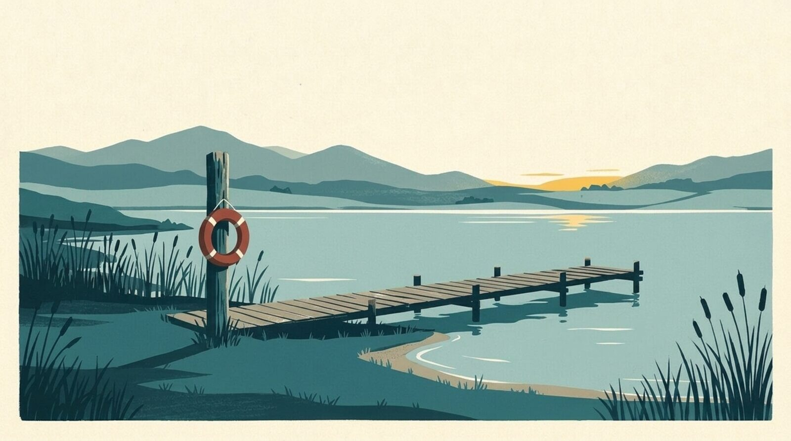

En bref
La Société Suisse de Sauvetage (SSS) résume la baignade en six maximes : 1) accompagner les enfants au bord de l’eau ; 2) pas d’alcool, ni estomac chargé, ni à jeun ; 3) pas de saut après un bain de soleil prolongé ; 4) pas de plongeon ni de saut dans une eau trouble ou inconnue ; 5) pas de matelas pneumatique en eau profonde ; 6) ne jamais nager seul sur de longues distances.
Les six maximes
- 1. Les enfants au bord de l’eau doivent toujours être accompagnés ; les petits enfants se gardent à portée de main.
- 2. Ne jamais se baigner après avoir consommé de l’alcool ou des drogues, ni l’estomac chargé, ni à jeun.
- 3. Ne jamais sauter dans l’eau après un bain de soleil prolongé : le corps a besoin d’un temps d’adaptation.
- 4. Ne pas plonger ni sauter dans des eaux troubles ou inconnues.
- 5. Les matelas pneumatiques et tout matériel auxiliaire de natation ne doivent pas être utilisés en eau profonde.
- 6. Ne jamais nager seul sur de longues distances.
Pourquoi ces six-là ?
La SSS explique chaque maxime sur sa page : les petits enfants peuvent se noyer en moins de 20 secondes, sans bruit, même dans une faible profondeur ; l’alcool altère la conscience et fait surestimer ses capacités ; le choc thermique après le soleil peut causer crampes, malaise, voire un évanouissement ; des dangers invisibles se cachent dans l’eau inconnue ; un matelas peut perdre son air ; même le corps le mieux entraîné peut avoir une défaillance.
Nous détaillons chacune dans un article : les enfants, manger, boire et bronzer, plonger dans l’inconnu, matelas et bouées, nager seul.
Rien ici ne remplace un cours de secourisme ni l’avis d’un médecin. L’eau et le vent du moment, plage par plage, sont dans l’app Mon Lac.
L’eau du Léman en ce moment
La température de chaque plage est dans l’app Mon Lac, mise à jour toutes les trois heures.
Avertissement. Cet article donne des informations générales tirées des sources citées ; il ne remplace pas un avis médical. La baignade en eau froide sollicite fortement le cœur et peut être dangereuse : demandez conseil à un médecin avant de commencer, en particulier en cas de problème cardiaque, de tension ou de grossesse. Ne vous baignez jamais seul et respectez les consignes des sauveteurs. Chacun pratique sous sa propre responsabilité ; en cas d’urgence, appelez le 144 en Suisse ou le 112.